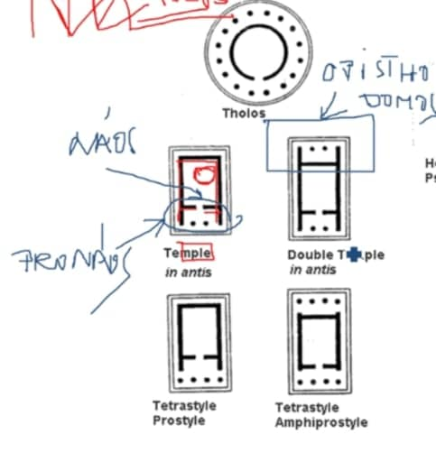
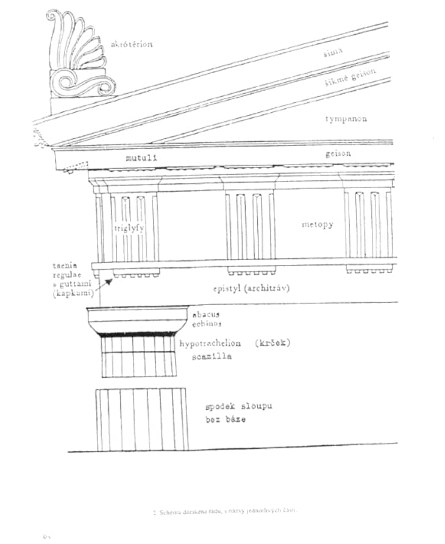
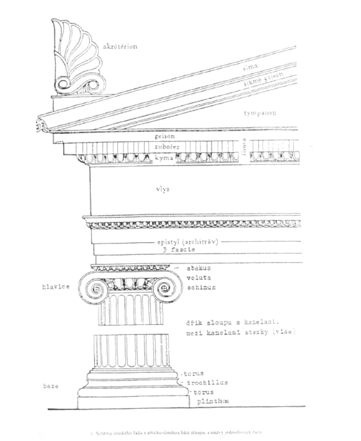
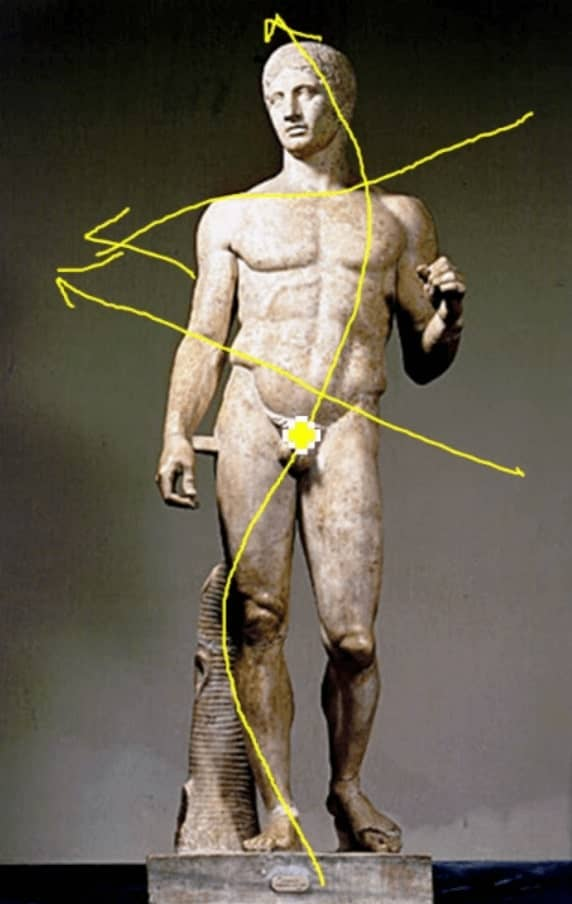
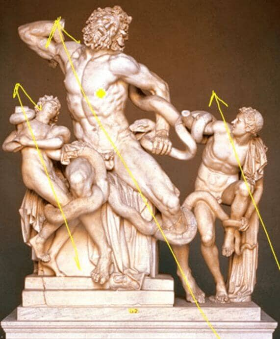

4. Řecké antické umění
-
význam má hlavně moře → hlavně
přímořská města, netvořili říši ale spolupracující
městské státy
Chronologie
-
kolem 12. století př. n. l.
- Dórové → Řecko
- Iónové → Malá Asie (dnešní Turecko)
-
GEOMETRICKÝ SLOH (1000 - 800 př. n. l.)
- 8. století př. n. l. → Homér
- 776 př. n. l. → první Olympiáda
-
ARCHAICKÉ OBDOBÍ (800 - 500 př. n. l.)
-
KLASICKÉ OBDOBÍ (500 - 320 př. n. l.)
- Řecko-perské války (-480 Thermopylae)
- Perikles (450-430)
- klasus → vybraný, nejlepší
- Peloponéská válka (432 - 404 př.n.l.)
-
HELENISTICKÉ OBDOBÍ (320 - 30 př.n.l.)
- Hellas → Řecko
- umírá Alexandr Veliký
- kolem roku - 30 začíná dominovat Římská říše
ARCHITEKTURA
GEOMETRICKÝ SLOH
- DIPYLSKÉ VÁZY (URNY → POHŘEB ŽEHEM)
- oltář před chrámem
-
AKROPOLIS (akro = vysoký, polis = město)
- PROSTŘEDEK se sochou Boha → NÁOS nebo CELLA
- PŘEDSÍŇ → PRONÁOS
- ZADEK pro obětiny → O-PIS-THO-DOMOS (není vždy)

-
- SLOUPY (STYLOS)
- ZÁKLADNA PRO SLOUPY (STYLOBADES)
-
ARCHITRÁV → proto se tomu říká architrávový systém
(VRŠEK)
- TYMPANON (“STŘECHA” - ŠTÍT)
-
SLOUP
- HLAVICE, DŘÍK, PATKA, KANELURY → “ŽLÁBKY”
ŘÁDY
- každý má nějakou logiku → nekombinují se
- odvinuto od kmenů
- Dórský - dnešní Řecko
- Iónský - dnešní Turecko
DÓRSKÝ
- ROBUSTNĚJŠÍ (proto považován za mužský)
- NEMÁ PATKU (BÁZI)
- ARCHITRÁV DĚLEN NA TRIGLYFY A METOPY
-
DŘÍK MÁ KANELURY (ŽLÁBKY) → OPTICKY ZUŽUJE (stejné jako
iónský)
-
HLAVICE
- JE Z DESKY → ABAKUSU
- ECHINOS → MALÝ KUŽEL NA HOŘE DŘÍKU

IONSKÝ
- JEMNĚJŠÍ, KŘEHČÍ, TENČÍ (proto považován za ženský)
- MÁ PATKU (BÁZI)
-
ARCHITRÁV MÁ VLYS a v něm VÝJEV (DÓRSKÝ MÁ TRIGLYFY A
METOPY)
-
DŘÍK MÁ KANELURY (ŽLÁBKY) → OPTICKY ZVĚTŠUJE (stejné jak
dórský)
- NA HLAVICI JSOU VOLUTY (SPIRÁLY/ZATOČENÍ)

KORINTSKÝ
- OBDOBA IONSKÉHO
-
ROZDÍL MÁ HLAVICE, KTERÁ JE INSPIROVANÁ ROSTLINOU → AKANTEM
SOCHAŘSTVÍ
-
využití polychromu (barevnost) → hlavně modrá a červená
-
KÚROS → OBNAŽENÍ CHLAPCI, INSPIRACE EGYPTEM
-
archaický úsměv, pěst, vystouplá noha, zdůrazněné
rybí oči, zgeometrizované vlasy → Egypt
- erotickým motivem byla lýtka
-
KÓRÉ → ženské akty byly tabu, tudíž ženy jsou
oblečené
-
archaický úsměv, pěst, vystouplá noha, zdůrazněné
rybí oči, stylizované vlasy připomínající paruky
KLASICKÝ SLOH
- malba na vázy (červená a černá)
- znovuvystavení Athén
- Pantheon → Dórský styl
- byl barevný
-
FEIDIAS
-
CHRYSELEFANTINOVÁ PLASTIKA → zlato a
slonovina
- Bohyně Niké symbolizující vítězství
-
soustředí se na ženskou anatomii, ovšem nelze dělat
akty
-
využití mokrého oblečení
(vlhká drapérie) → lze vidět ňadra a
břicho, ovšem žena je pořád oblečená
-
POLYKLEITOS
-
KONTRAPOST
-
váha přenesena na jednu nohu, druhá je
uvolněná
- esovité prohnutí
-
pas jde do jedné linie, ramena do druhé →
tyto linie se pak mimo sochu obrazně
potkávají

-
PRAXITÉLES
-
Venuše Knidská → zlomení tabu ŽENSKÉHO AKTU
- využití KONTRAPOSTU
HELÉNISTICKÉ OBDOBÍ
- šachovnicové rozložení budov ve městech
- mnoho měst pojmenováno Alexandrie
- DĚTI A STAŘÍ LIDÉ
- robustní (svalnaté) postavy
- diagonály

Obrázky
-
PARTHENON
- METOPY, TRIGLYFY, CELKOVĚ ARCHITEKTURA
-
PRINCIP DIVALEL
-
DORIFOR
-
FEIDIAS
- CHRISELEFANTINA → SLONOVINA A ZLATO
- ČERVENOFIGUROVÁ VÁZA
Audio